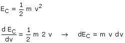
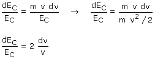

Para saber como cambia la energía cinética al cambiar la velocidad hay que hallar la derivada:  Para un mismo cambio de velocidad (dv) el cambio de energía cinética (dEC) es tanto mayor cuanto mayor sea la velocidad. Para entendernos: aumenta más la energía cinética al pasar de 9 a 10 m/s que al pasar de 8 a 9 m/s Dividiendo por la energía cinética la expresión obtenida resulta:  (dEC/Ec) es el porcentaje de cambio de la energía cinética, (dv/v) es el porcentaje de cambio de la velocidad. De acuerdo con esto, al cambiar la velocidad en un 1% la energía cinética cambiará en un 2% |